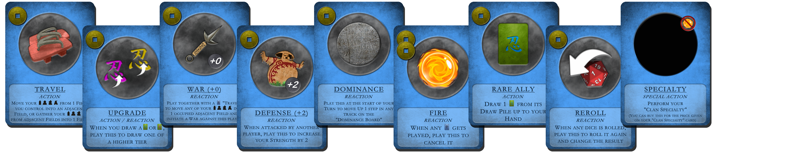

Hobby Project - The 5th Great Ninja War

Introduction
"The 5th" is an unpredictable strategic tabletop game set to the Naruto universe where the players are competing to capture the most Tailed Beasts. The game is for 2 to 4 players and will take approximately 90 minutes per player.
The Philosophy
When making a game, I want to give the player the feeling of taking part in its world. For players unknown to the Naruto universe, the game gives a thorough introduction to its complexity and character diversitivity. For players known to the series, the game features a deeper layer of logic and easter eggs to uncover
When playing a tabletop game, each component should feel different for each player, making the players wanting to play from different perspectives. A game isn't worth making if there is only one way to approach its gameplay.
In total, there are over 70 unique ways of approaching this game, making a new gaming experiance for each new session.
Components

Game Board
The map is taken directly from the series, with some additons to make for a good balanced game map. The terrain changes througout the map, making for different approaches from where the players are located. Based on selected Clans, each Player starts at different locations, making each Clan have different objectives to reach.

Tailed Beasts
The player with the most captured "Tailed Beasts" at the end of 4 rounds, wins the game. "Tailed Beasts" can be aquired by fighting them on the board and/or winning them from other players through combat.

Clan Specialties
Each Clan features 10 unique Clan Specialties to choose from. Each Clan Specialty brings 1 additional rule into play which only the owner can take advantage from. The Clan Specialties lays the foundation for the strategies and possibility for the player.

Battle Cards
Each player can choose between 7 unique Clans, each with its own set of 20 Battle cards (characters from this clan). Each Clan focus on differnet aspects of the game, making the player to choose strategies based on their selected Clan. The Battle Cards are played in "Wars" against other players to aquire new land. The Effects and Resources given on the cards may help the players chances of winning the game, making Wars a crucial part of the game.

Ally Cards
These are Battle Cards not directed towards a specified Clans, meaning all players can aquire them. Here, all other characters in the series are featured, bringing new aspects and combos into the gameplay. The cards comes in 3 Tiers, each more powerful than the previous, and are aquired in many different ways throughout the game. There are 100 cards of each Tier, making for a large variety to the gameplay.

Action Cards
At the start of each Round, the players must buy Action Cards from a Shop, giving them playing options for the rest of the Round. Each Action costs Coins, which can be aquired though traversing the map and/or through Wars. The Shop contains a given set of Action Cards, including a "Hidden Deck" featuring uniqe Actions that isn't available in the Shop, making over 30 different Actions to play. The "Hidden Deck" is cheep, but hidden, so that the players doesn't know what they buy.

Event Cards
At the start of each Round, one Event card is drawn. This Event adds one rule to this Round, making each Round behave somewhat different that the other.

Dominance Board
The players can aquire advantages over others, based on their position on the tracks on the Dominance Board.
Their positions will change throughout the game, and what to focus on will become essential.
The "Starting Player" determin the order to buy Actions and in witch order to play them.
The "Tie Breaker" let the winner of a tie determin the outcome.
The "Unit Strength" gives the players addition power to their Units, making a differnce to the first portion of a War.
The "Recruitment" makes the players add points of Units equal to the track onto the Board when taking control over a Field containing a "Hot Spring"-icon.
The "Payment" gives the players Coins equal to the track when taking control over a Field containing a "Coin"-icon.
The "Hand Limit" determin how many Battle Cards the players can have in their hands at any given time.